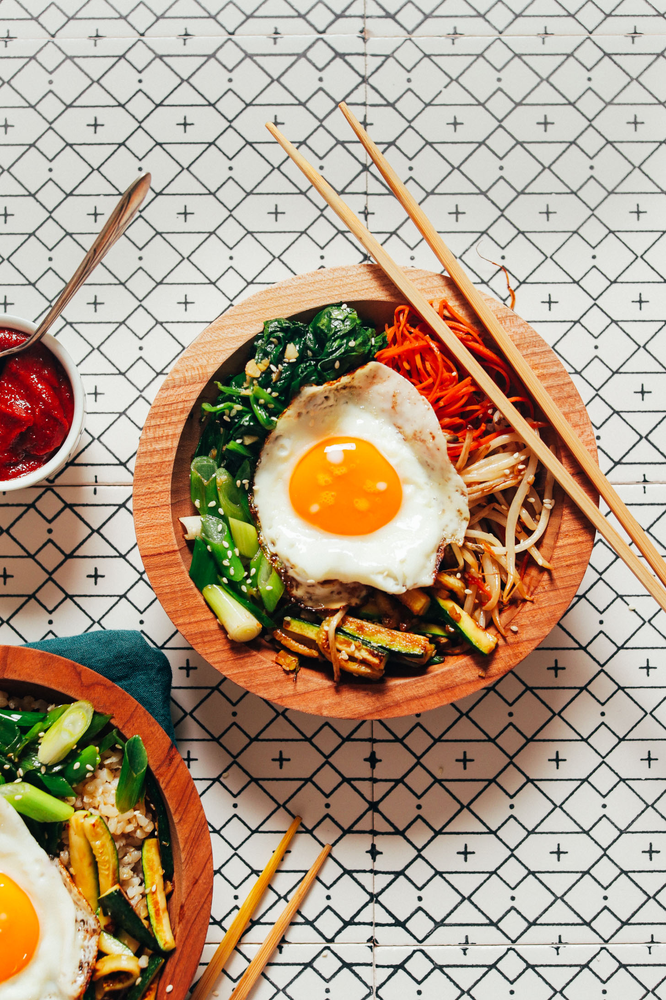

Bibimbap
Ingredients:
RICE:
- 3/4 cup short-grain brown or white rice, rinsed (soaking for 12-24 hours to speed cooking is optional*)
- 1 ½ cups water (if rice was soaked, reduce water by about 1/4 cup (60 ml) as recipe is written)
- 1 pinch sea salt
VEGGIES + EGG:
- 2-3 Tbsp sesame oil, DIVIDED (toasted for more flavor, untoasted works, too*)
- 3 cups packed mixed vegetables (such as finely shredded carrot, thinly sliced zucchini, or spinach)
- 1 heaping cup bean sprouts (if you can’t find, sub more mixed vegetables)
- 2 stalks green onion, sliced on an angle
- 2 cloves garlic, minced
- 2 Tbsp coconut aminos, DIVIDED (or sub tamari to taste, or sea salt)
- 2 large eggs* (we recommend organic, pasture-raised, and as ethically sourced as possible, such as Vital Farms)
FOR SERVING:
- 2-4 Tbsp Korean Gochujang Sauce (or sub store-bought — look for vegan or gluten-free as needed, such as Wholly Gochujang)
- Kimchi (optional)
- Toasted or raw sesame seeds (optional)
Preperation Time:
45 Minutes
Instructions:
To cook congee
- Optional: If soaking rice, rinse, drain, and add to a mixing bowl and cover with cool water. Soak for 12 hours or overnight. For a quicker soak, cover in hot water for 1 hour. Then rinse and drain.
- To a medium saucepan, add cooking water (if you soaked your rice, start with 1 ¼ cups water as recipe is written), rinsed rice, and salt. Heat over high heat and bring to a boil, reduce heat to simmer, and cover. Cook for 15-20 minutes or until water is absorbed and rice is tender and fluffy. Soaked rice generally takes less time to cook. Unsoaked rice can take up to 30 minutes or more. Keep covered and set aside.
- In the meantime, prepare Gochujang sauce. Skip if using store-bought.
- While the rice finishes cooking, heat a large skillet over medium heat (stainless steel or cast iron are best). Once hot, add 1 tsp of sesame oil or enough to just coat the pan.
- Once the oil is hot, add vegetables one type at a time and cook in batches until lightly browned (1-2 minutes), seasoning each with a little minced garlic and a dash of coconut aminos, tamari, or sea salt. Cooking in batches allows you to arrange vegetables separately over the rice for visual effect. We cooked the zucchini first, then carrots, green onion, bean sprouts, and spinach. Add more oil to the pan as needed between vegetables.
- Arrange cooked vegetables in individual piles on a serving plate and cover gently to keep warm until serving.
- To cook eggs (if vegan, see notes for options!), heat the same pan over medium heat. Once hot, add a little more oil (sesame or otherwise), and carefully crack eggs. For sunny-side up (our preference), cover briefly with a lid to steam for 1 minute, then remove lid and continue cooking until whites are cooked but yolks are still runny. Turn off heat and set aside (uncovered).
- To serve, divide desired amount of rice between serving bowls (see notes for traditional dolsot recommendations and crispy rice hacks!) and top with portions of cooked veggies and egg.
- Serve with 1-2 Tbsp Gochujang, kimchi (optional), and a dash of sesame seeds (optional). Bibimbap means “mixed rice,” so once your egg and Gochujang sauce are added, use a spoon or your chopsticks to stir everything together and mix the flavors. Then enjoy!
- This dish is best fresh, but leftovers can be stored in the refrigerator up to 2 days and be reheated on the stovetop over medium heat as a stir fry. Not freezer-friendly.
